Examples# A gallery of examples and that showcase how PyFinitDiff can be used. Some examples demonstrate the use of the API in general and some demonstrate specific applications in tutorial form. triplets computation# 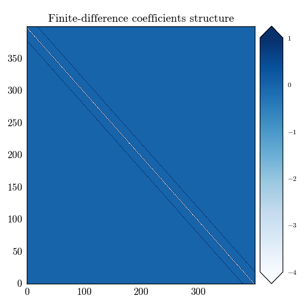 Example: triplets 0 Example: triplets 0 Example: triplets 1 Example: triplets 1 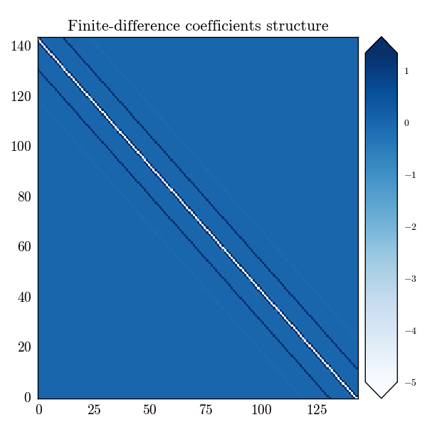 Example: triplets 2 Example: triplets 2 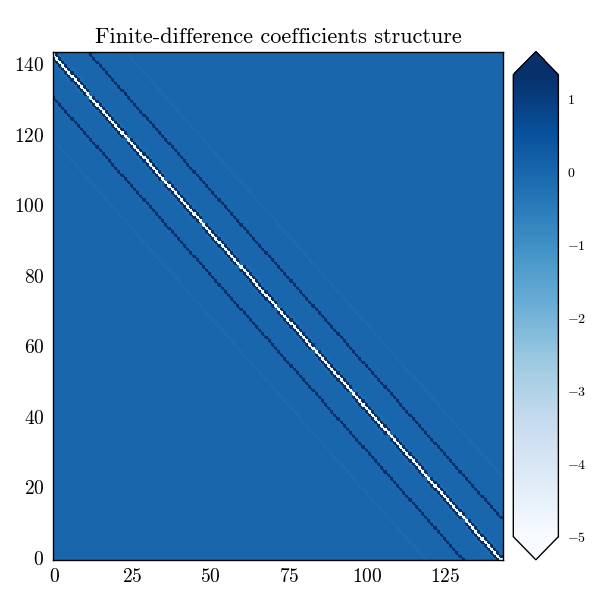 Example: triplets 3 Example: triplets 3 1-dimensional# 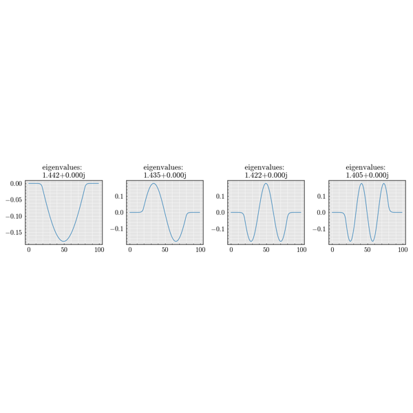 Example: 1D eigenmodes 0 Example: 1D eigenmodes 0 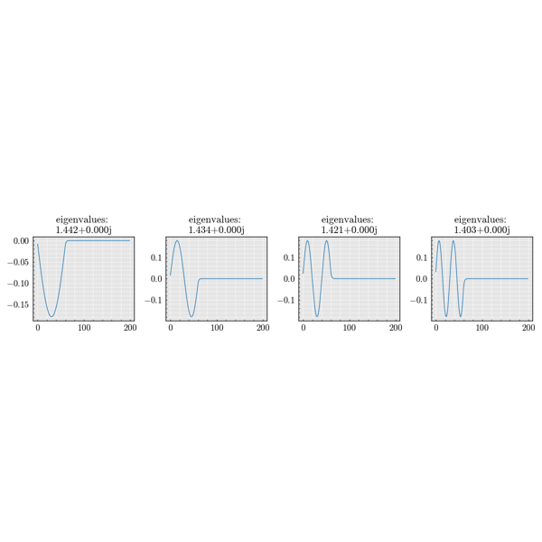 Example: 1D eigenmodes 2 Example: 1D eigenmodes 2 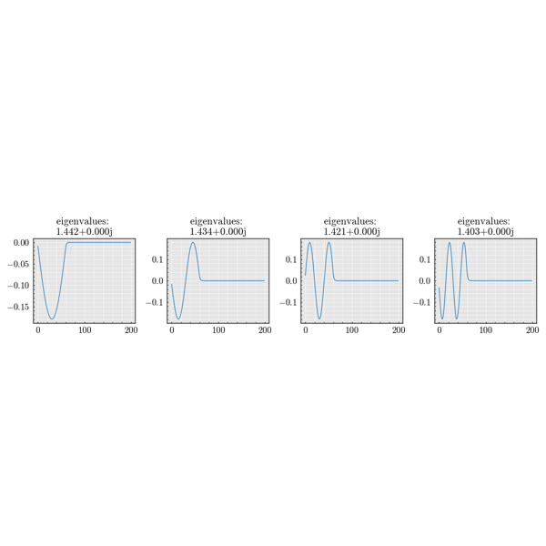 Example: 1D eigenmodes 2 Example: 1D eigenmodes 2 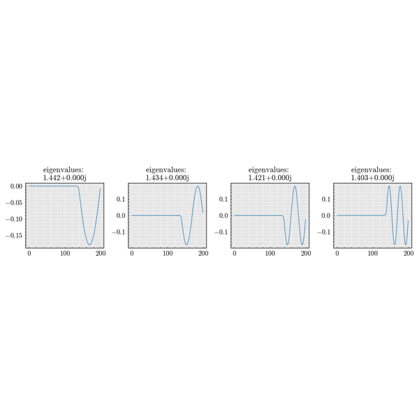 Example: 1D eigenmodes 2 Example: 1D eigenmodes 2 2-dimensional eigenmodes# 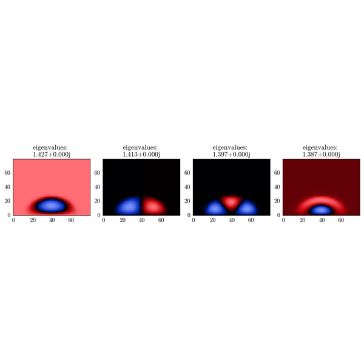 Example: eigenmodes 0 Example: eigenmodes 0 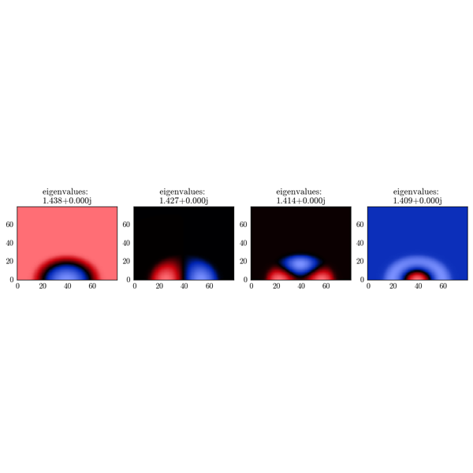 Example: eigenmodes 1 Example: eigenmodes 1 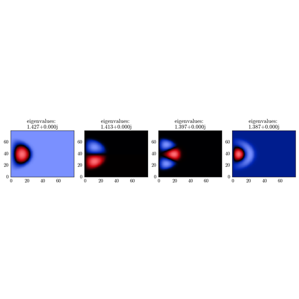 Example: eigenmodes 2 Example: eigenmodes 2 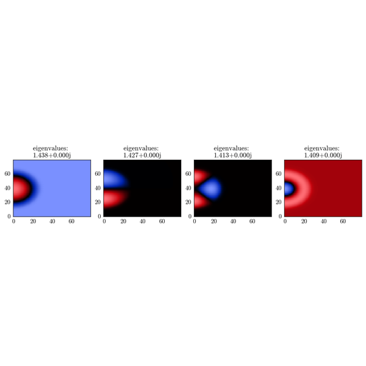 Example: eigenmodes 3 Example: eigenmodes 3 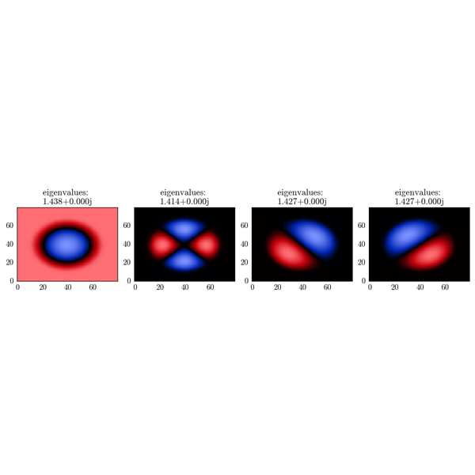 Example: eigenmodes 4 Example: eigenmodes 4 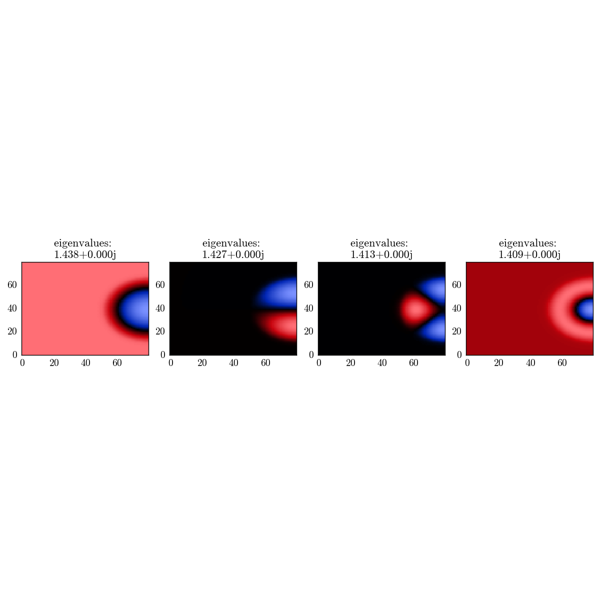 Example: eigenmodes 5 Example: eigenmodes 5 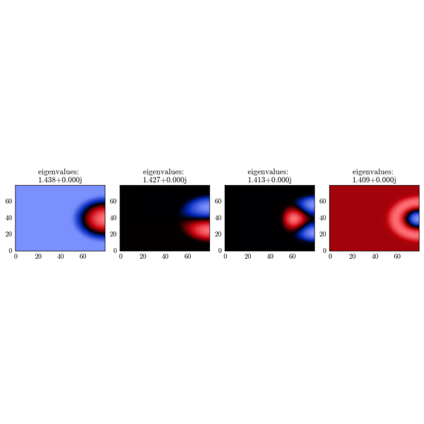 Example: eigenmodes 6 Example: eigenmodes 6 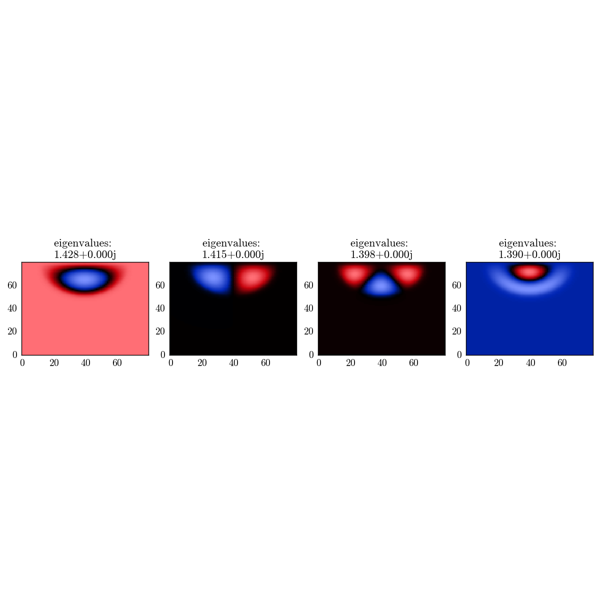 Example: eigenmodes 7 Example: eigenmodes 7 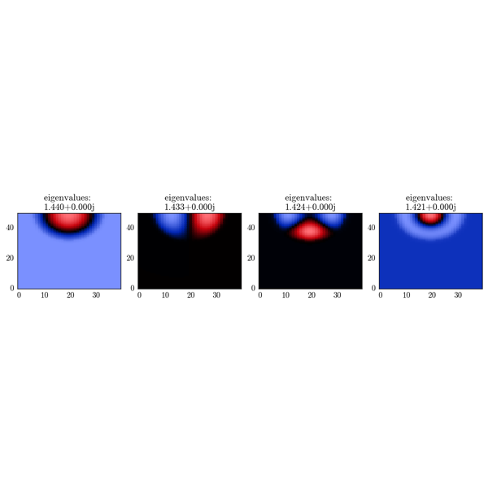 Example: eigenmodes 8 Example: eigenmodes 8 Extras# 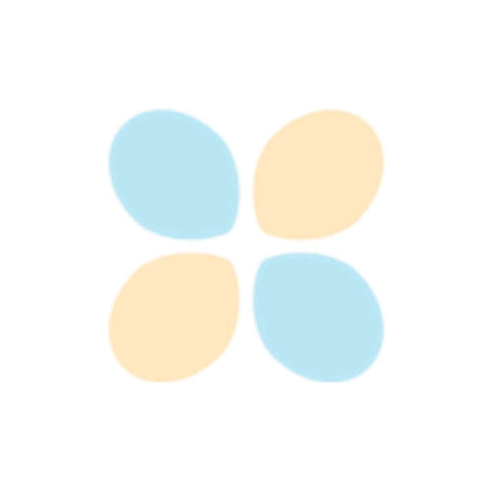 Gradient of array Gradient of array 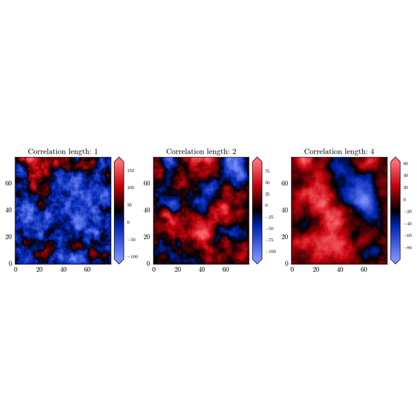 Generating Whittle-Matérn field Generating Whittle-Matérn field Gallery generated by Sphinx-Gallery